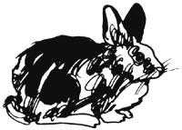
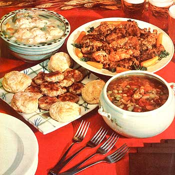

From Robert C. Winans of Lutz, Florida and George Fournier of Charlton City, Massachusetts
Robert C. "Uncle Bob" Winans of Lutz, Florida keeps several dozen rabbits (along with laying hens, fishing worms, and a year-round garden) on the acre of land to which he and his wife have retired.
And when it comes time to eat one of his homegrown hares, Uncle Bob doesn't rely on any cookbook . . . nor does he fall back on some time-honored but ordinary cooking method. What he does is invent new ways to prepare the tasty meat as he goes along!
George Fournier of Charlton City, Massachusetts-on the other hand-prefers to adhere to one favorite rabbit-cooking formula that has never let his family down. "It's a recipe my Canadian wife, Monique, brought to Massachusetts with her as part of her dowry . . . part of the accumulated farm kitchen wisdom that's passed down from generation to generation in a land where tradition is still a part of one's inheritance."
According to her husband, Monique Fournier's Canadian rabbit stew "will stick to your ribs through a whole day's chores, and keep you till the dinner bell rings".
The first three recipes on these pages, then, will give you some idea of Bob Winans' creative flair ("I've developed these myself," he writes, "and I believe your readers will enjoy them as much as we do"), and the fourth will present you with the chance to experience a wonderful Canadian tradition!
MOTHER's staff has tested all four recipes, and the results (pictured here) are some of the best-tasting rabbit dishes we've ever sampled. Try 'em for yourself and see!
1 cup all-purpose flour
1 teaspoon Season-All (we were unable to find this in MOTHER's area, so we did without)
1 teaspoon garlic powder
1/4 teaspoon pepper
1/4 teaspoon thyme (optional)
1/2 teaspoon salt
1 three-to four-pound rabbit, cut into pieces
the juice of one grapefruit
1/2 cup cooking oil (or enough to measure 1/4 inch in bottom of pan)
1 medium onion, chopped
Combine the flour with the seasonings. Dip each piece of rabbit in the grapefruit juice, then roll it in the flour mixture until the meat is thoroughly coated. Pour the oil and chopped onion into a deep, heavy pot and heat over a high flame. Place the floured rabbit in the pot and brown each chunk on first one side and then the other. Lower the flame, stir together the remaining grapefruit juice and flour mixture, and add them to the pot. Cover and let everything simmer together until the meat is tender, turning the rabbit pieces from time to time to keep them from sticking.
the coarsely ground meat and fat of one large rabbit (save the bones for soup stock)
1-1/2 teaspoons salt
1 teaspoon pepper a pinch of ginger
2 or more teaspoons sage (to taste)
1 teaspoon thyme
a pinch of garlic powder
a dash of cayenne pepper, or two or three dashes of hot pepper sauce (optional)
Combine the seasonings with the ground meat (everything together should total about two pounds), and regrind the mixture (this helps to get everything well blended). Refrigerate overnight. The next day, test the flavor by frying a small patty, and adjusting the seasoning if that seems necessary. Form one-pound rolls of the meat, wrap them in freezer wrap, and place the ready-to-slice rolls in your freezer (the frozen sausage can be cut quite easily when you're ready to use it).
the bones of one or more rabbits
1-2 quarts water
sliced carrots
chopped onions
pre-soaked lentils or split peas fresh or canned tomatoes
salt, pepper, and garlic powder to taste
a few pieces of suet or a little butter
(Note: The exact amounts of the above ingredients are purposely not specified, to allow you to vary them according to your preference or what you have on hand.) Boil the bones and water in a good-sized stock pot. Then remove the bones from the stock and scrape all the meat from them. Return the chunks of rabbit to the broth and add the carrots, onions, lentils or split peas, and tomatoes . . . plus any other vegetables you may wish to Include in your soup. Season, add suet or butter, and simmer until the vegetables are tender.
1 large, whole rabbit
1 quart water
2 tablespoons cornstarch
6 sliced carrots
6 medium potatoes, diced
1 cup whole kernel corn
1 cup green peas
1 cup wax or green beans
1 medium onion, chopped
1 cup diced celery
1 bay leaf
salt and pepper to taste
Boil the rabbit in the water until its meat is tender, then remove it from the pot and bone it. Put the meat into a large kettle, add two cups of the broth in which the rabbit was cooked, bring to a boil, and add a thickening sauce that you've made by stirring the cornstarch into 1/4 cup of the remaining rabbit broth. Allow the kettle's contents to boil for another minute, then reduce the heat. Add all the remaining ingredients.
"Now for the piece de resistance, the topping that makes this stew stand head and shoulders above the rest!" says George Fournier.
1 cup flour
1-1/2 teaspoons baking powder
1/2 teaspoon salt
2 tablespoons chilled shortening
1/4 to 1/2 cup milk (the less you use, the better the dumplings seem to hold together)
Sift the dry ingredients together into a bowl, then cut in the shortening with a pastry blender until the mixture resembles coarse meal. Add the milk all at once, stir lightly just until the dough holds together, and then drop rounded tablespoonfuls of the mixture on top of the gently bubbling stew. With the heat adjusted so that the liquid just simmers, let the dumplings cook-uncovered-for ten minutes, then cover and let them cook ten minutes longer, or until the steam has fluffed them up nicely.
If you need to thicken the stew, do so after removing the dumplings. And George recommends serving homemade tomato relish and cranberry sauce on the side, to give your hearty meal just the proper finishing touch.
|
 |
 |
|